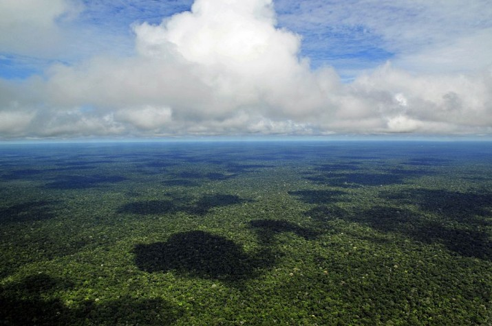
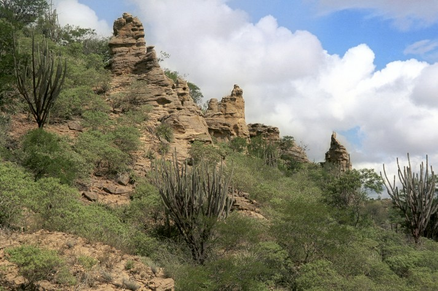
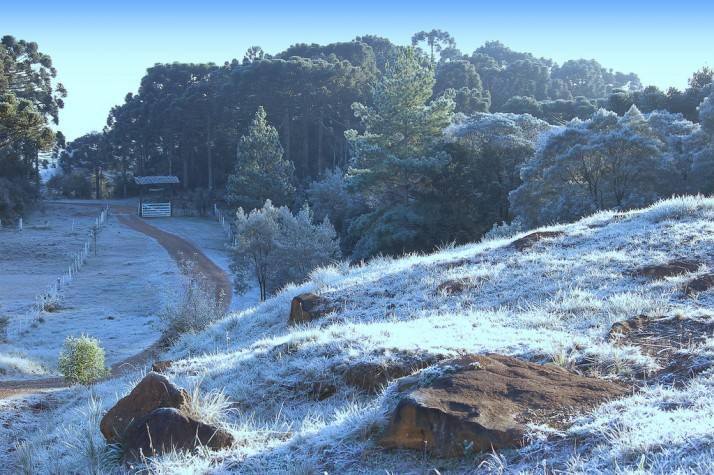
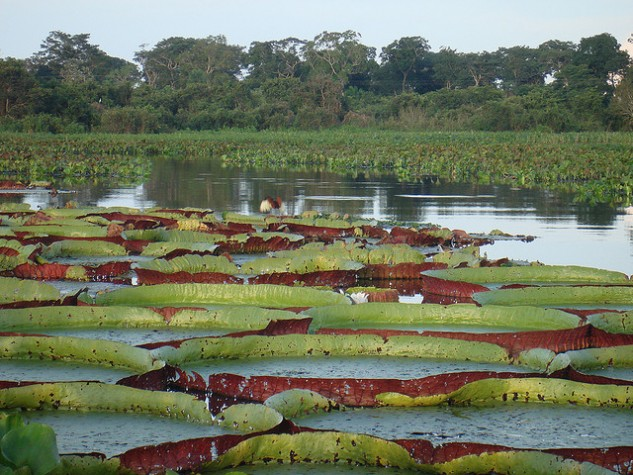

Biomas Brasileiros
amazonas
A Amazônia é quase mítica: um verde e vasto mundo de águas e florestas, onde as copas de árvores imensas escondem o úmido nascimento, reprodução e morte de mais de um-terço das espécies que vivem sobre a Terra. Os números são igualmente monumentais. A Amazônia é o maior bioma do Brasil: num território de 4,196.943 milhões de km2 (IBGE,2004), crescem 2.500 espécies de árvores (ou um-terço de toda a madeira tropical do mundo) e 30 mil espécies de plantas (das 100 mil da América do Sul). A bacia amazônica é a maior bacia hidrográfica do mundo: cobre cerca de 6 milhões de km2 e e tem 1.100 afluentes. Seu principal rio, o Amazonas, corta a região para desaguar no Oceano Atlântico, lançando ao mar cerca de 175 milhões de litros d’água a cada segundo. As estimativas situam a região como a maior reserva de madeira tropical do mundo. Seus recursos naturais – que, além da madeira, incluem enormes estoques de borracha, castanha, peixe e minérios, por exemplo – representam uma abundante fonte de riqueza natural. A região abriga também grande riqueza cultural, incluindo o conhecimento tradicional sobre os usos e a forma de explorar esses recursos naturais sem esgotá-los nem destruir o habitat natural. Toda essa grandeza não esconde a fragilidade do escossistema local, porém. A floresta vive a partir de seu próprio material orgânico, e seu delicado equilíbrio é extremamente sensível a quaisquer interferências. Os danos causados pela ação antrópica são muitas vezes irreversíveis. Ademais, a riqueza natural da Amazônia se contrapõe dramaticamente aos baixos índices sócio-economicos da região, de baixa densidade demográfica e crescente urbanização. Desta forma, o uso dos recursos florestais é estratégico para o desenvolvimento da região.
Caatinga
A caatinga ocupa uma área de cerca de 844.453 quilômetros quadrados, o equivalente a 11% do território nacional. Engloba os estados Alagoas, Bahia, Ceará, Maranhão, Pernambuco, Paraíba, Rio Grande do Norte, Piauí, Sergipe e o norte de Minas Gerais. Rico em biodiversidade, o bioma abriga 178 espécies de mamíferos, 591 de aves, 177 de répteis, 79 espécies de anfíbios, 241 de peixes e 221 abelhas. Cerca de 27 milhões de pessoas vivem na região, a maioria carente e dependente dos recursos do bioma para sobreviver. A caatinga tem um imenso potencial para a conservação de serviços ambientais, uso sustentável e bioprospecção que, se bem explorado, será decisivo para o desenvolvimento da região e do país. A biodiversidade da caatinga ampara diversas atividades econômicas voltadas para fins agrosilvopastoris e industriais, especialmente nos ramos farmacêutico, de cosméticos, químico e de alimentos. Apesar da sua importância, o bioma tem sido desmatado de forma acelerada, principalmente nos últimos anos, devido principalmente ao consumo de lenha nativa, explorada de forma ilegal e insustentável, para fins domésticos e indústrias, ao sobrepastoreio e a conversão para pastagens e agricultura.

Mata Atlântica
A Mata Atlântica é formada por um conjunto de formações florestais (Florestas: Ombrófila Densa, Ombrófila Mista, Estacional Semidecidual, Estacional Decidual e Ombrófila Aberta) e ecossistemas associados como as restingas, manguezais e campos de altitude, que se estendiam originalmente por aproximadamente 1.300.000 km2 em 17 estados do território brasileiro. Hoje os remanescentes de vegetação nativa estão reduzidos a cerca de 22% de sua cobertura original e encontram-se em diferentes estágios de regeneração. Apenas cerca de 7% estão bem conservados em fragmentos acima de 100 hectares. Mesmo reduzida e muito fragmentada, estima-se que na Mata Atlântica existam cerca de 20.000 espécies vegetais (cerca de 35% das espécies existentes no Brasil), incluindo diversas espécies endêmicas e ameaçadas de extinção. Essa riqueza é maior que a de alguns continentes (17.000 espécies na América do Norte e 12.500 na Europa) e por isso a região da Mata Atlântica é altamente prioritária para a conservação da biodiversidade mundial. Em relação à fauna, os levantamentos já realizados indicam que a Mata Atlântica abriga 849 espécies de aves, 370 espécies de anfíbios, 200 espécies de répteis, 270 de mamíferos e cerca de 350 espécies de peixes. Além de ser uma das regiões mais ricas do mundo em biodiversidade, tem importância vital para aproximadamente 120 milhões de brasileiros que vivem em seu domínio, onde são gerados aproximadamente 70% do PIB brasileiro, prestando importantíssimos serviços ambientais. Regula o fluxo dos mananciais hídricos, assegura a fertilidade do solo, suas paisagens oferecem belezas cênicas, controla o equilíbrio climático e protege escarpas e encostas das serras, além de preservar um patrimônio histórico e cultural imenso. Neste contexto, as áreas protegidas, como as Unidades de Conservação e as Terras Indígenas, são fundamentais para a manutenção de amostras representativas e viáveis da diversidade biológica e cultural da Mata Atlântica.
Pampa
O Pampa está restrito ao estado do Rio Grande do Sul, onde ocupa uma área de 176.496 km² (IBGE, 2004). Isto corresponde a 63% do território estadual e a 2,07% do território brasileiro. As paisagens naturais do Pampa são variadas, de serras a planícies, de morros rupestres a coxilhas. O bioma exibe um imenso patrimônio cultural associado à biodiversidade. As paisagens naturais do Pampa se caracterizam pelo predomínio dos campos nativos, mas há também a presença de matas ciliares, matas de encosta, matas de pau-ferro, formações arbustivas, butiazais, banhados, afloramentos rochosos, etc. Por ser um conjunto de ecossistemas muito antigos, o Pampa apresenta flora e fauna próprias e grande biodiversidade, ainda não completamente descrita pela ciência. Estimativas indicam valores em torno de 3000 espécies de plantas, com notável diversidade de gramíneas, são mais de 450 espécies (campim-forquilha, grama-tapete, flechilhas, brabas-de-bode, cabelos de-porco, dentre outras). Nas áreas de campo natural, também se destacam as espécies de compostas e de leguminosas (150 espécies) como a babosa-do-campo, o amendoim-nativo e o trevo-nativo. Nas áreas de afloramentos rochosos podem ser encontradas muitas espécies de cactáceas. Entre as várias espécies vegetais típicas do Pampa vale destacar o Algarrobo (Prosopis algorobilla) e o Nhandavaí (Acacia farnesiana) arbusto cujos remanescentes podem ser encontrados apenas no Parque Estadual do Espinilho, no município de Barra do Quaraí. A fauna é expressiva, com quase 500 espécies de aves, dentre elas a ema (Rhea americana), o perdigão (Rynchotus rufescens), a perdiz (Nothura maculosa), o quer-quero (Vanellus chilensis), o caminheiro-de-espora (Anthus correndera), o joão-de-barro (Furnarius rufus), o sabiá-do-campo (Mimus saturninus) e o pica-pau do campo (Colaptes campestres). Também ocorrem mais de 100 espécies de mamíferos terrestres, incluindo o veado-campeiro (Ozotoceros bezoarticus), o graxaim (Pseudalopex gymnocercus), o zorrilho (Conepatus chinga), o furão (Galictis cuja), o tatu-mulita (Dasypus hybridus), o preá (Cavia aperea) e várias espécies de tuco-tucos (Ctenomys sp). O Pampa abriga um ecossistema muito rico, com muitas espécies endêmicas tais como: Tuco-tuco (Ctenomys flamarioni), o beija-flor-de-barba-azul (Heliomaster furcifer); o sapinho-de-barriga-vermelha (Melanophryniscus atroluteus) e algumas ameaçadas de extinção tais como: o veado campeiro (Ozotocerus bezoarticus), o cervo-do-pantanal (Blastocerus dichotomus), o caboclinho-de-barriga-verde (Sporophila hypoxantha) e o picapauzinho-chorão (Picoides mixtus) (Brasil, 2003). Trata-se de um patrimônio natural, genético e cultural de importância nacional e global. Também é no Pampa que fica a maior parte do aquífero Guarani. Desde a colonização ibérica, a pecuária extensiva sobre os campos nativos tem sido a principal atividade econômica da região. Além de proporcionar resultados econômicos importantes, tem permitido a conservação dos campos e ensejado o desenvolvimento de uma cultura mestiça singular, de caráter transnacional representada pela figura do gaúcho. A progressiva introdução e expansão das monoculturas e das pastagens com espécies exóticas têm levado a uma rápida degradação e descaracterização das paisagens naturais do Pampa. Estimativas de perda de hábitat dão conta de que em 2002 restavam 41,32% e em 2008 restavam apenas 36,03% da vegetação nativa do bioma Pampa (CSR/IBAMA, 2010).
Pantanal
O bioma Pantanal é considerado uma das maiores extensões úmidas contínuas do planeta. Este bioma continental é considerado o de menor extensão territorial no Brasil, entretanto este dado em nada desmerece a exuberante riqueza que o referente bioma abriga. A sua área aproximada é 150.355 km², ocupando assim 1,76% da área total do território brasileiro. Em seu espaço territorial o bioma, que é uma planície aluvial, é influenciado por rios que drenam a bacia do Alto Paraguai. O Pantanal sofre influência direta de três importantes biomas brasileiros: Amazônia, Cerrado e Mata Atlântica. Além disso sofre influencia do bioma Chaco (nome dado ao Pantanal localizado no norte do Paraguai e leste da Bolívia). O bioma Pantanal mantêm 86,77% de sua cobertura vegetal nativa. A vegetação não florestal (savana [cerrado], savana estéptica [chaco], formações pioneiras e áreas de tensão ecológica ou contatos florísticos [ecótonos e encraves]) é predominante em 81,70% do bioma. Desses, 52,60% são cobertos por savana (cerrado) e 17,60% são ocupados por áreas de transição ecológica ou ecótonos. Os tipos de vegetação florestais (floresta estacional semi-decidual e floresta estacional decidual) representam 5,07% do Pantanal. A maior parte dos 11,54% do bioma alterados por ação antrópica é utilizada para a criação extensiva de gado em pastos plantados (10,92%); apenas 0,26% é usado para lavoura. Uma característica interessante desse bioma é que muitas espécies ameaçadas em outras regiões do Brasil persistem em populações avantajadas na região, como é o caso do tuiuiú – ave símbolo do Pantanal. Estudos indicam que o bioma abriga os seguintes números de espécies catalogadas: 263 espécies de peixes, 41 espécies de anfíbios, 113 espécies de répteis, 463 espécies de aves e 132 espécies de mamíferos sendo 2 endêmicas. Segundo a Embrapa Pantanal, quase duas mil espécies de plantas já foram identificadas no bioma e classificadas de acordo com seu potencial, e algumas apresentam vigoroso potencial medicinal. Apesar de sua beleza natural exuberante o bioma vem sendo muito impactado pela ação humana, principalmente pela atividade agropecuária, especialmente nas áreas de planalto adjacentes do bioma. Assim como a fauna e flora da região são admiráveis, há de se destacar a rica presença das comunidades tradicionais como as indígenas, quilombolas, os coletores de iscas ao longo do Rio Paraguai, comunidade Amolar e Paraguai Mirim, dentre outras. No decorrer dos anos essas comunidades influenciaram diretamente na formação cultural da população pantaneira.